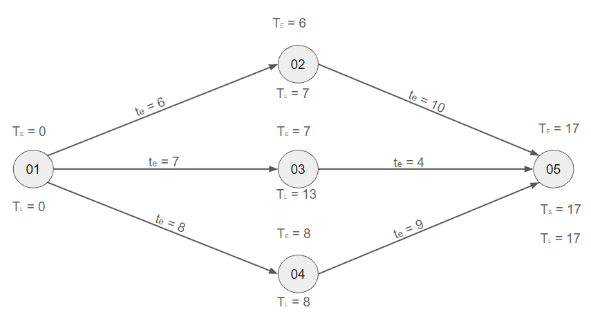

2) O te para a Atividade 3-5 é 4 semanas. Subtraindo 4 semanas do TL de 17 semanas do Evento 5 dá um TL de 13 semanas.
3) O te para a Atividade 4-5 é 9 semanas. Subtraindo 9 semanas do TL de 17 semanas do Evento 5 tem um TL para o Evento 4 de 8 semanas.
4) Da mesma maneira o TL do Evento 1 deve ser calculado pelas três linhas da atividade:
5) O menor valor encontrado será escolhido como o TL do Evento 1.
Nossa rede PERT ficará finalmente com esta aparência:

Se você não compreendeu por que o menor valor de TL foi escolhido ou não entendeu o que queremos dizer por um TL igual a zero, vire para a página 83.
Caso contrário, passe para a página 84.